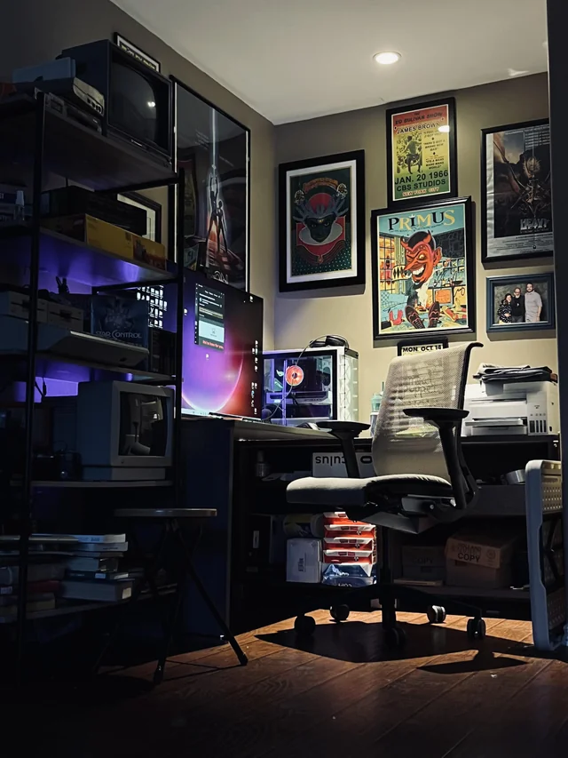

A personal computer, also known as a PC, is a type of computer designed for personal use. PCs are typically used for a wide range of tasks, including productivity, entertainment, and gaming. They are commonly found in homes and offices and are known for their versatility and ease of use. One of the main advantages of PCs is their ability to run a variety of software applications, including word processing programs, spreadsheets, and graphic design tools. Additionally, PCs can be used for gaming, watching movies, browsing the internet, and connecting with friends and family through social media. Another benefit of PCs is their customization options. Users can choose from a variety of components, such as processors, graphics cards, and memory, to build a computer that meets their specific needs. Additionally, users can easily upgrade their PCs with new components to keep pace with changing technology.
